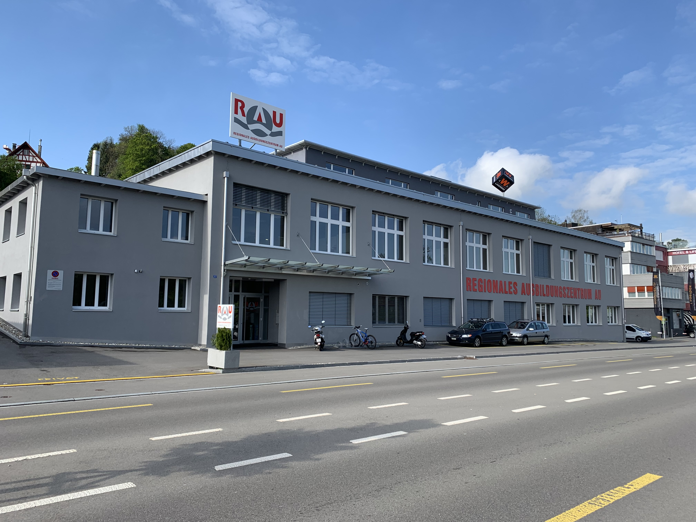

Willkommen bei LaNu
Home
Informatik
RAU
Lernende
Bewerbungstipps
LaNu - Home
Willkommen bei lanu.ch. Diese Webseite ist im Rahmen vom «Projekt Grafitti» im RAU Regionales Ausbildungszentrum Au entstanden. Sieh dich auf der Seite um und lerne etwas über den Beruf Informatiker, das RAU oder uns.
